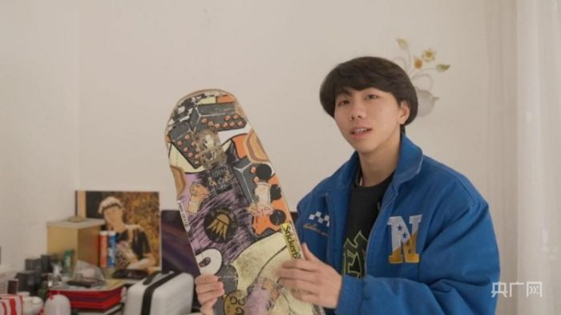
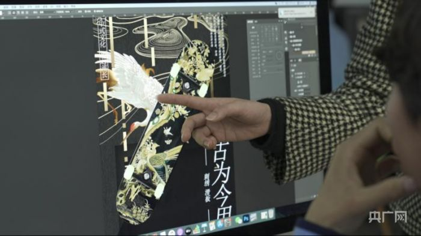
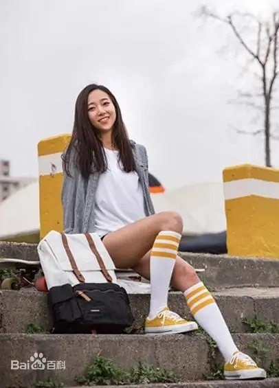
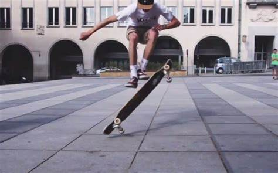
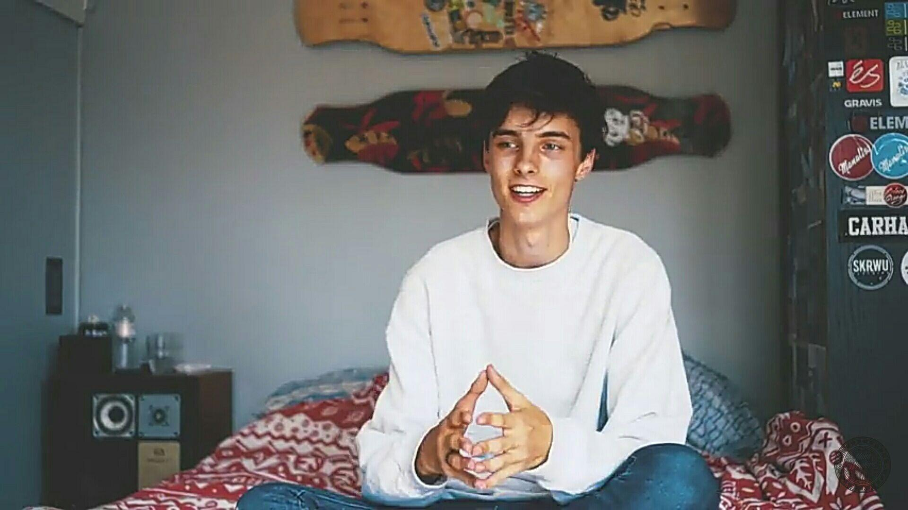
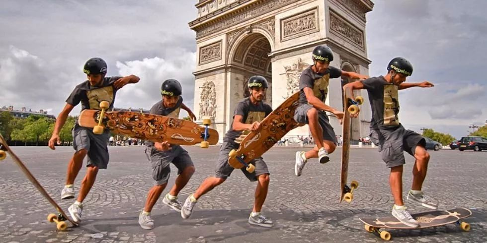
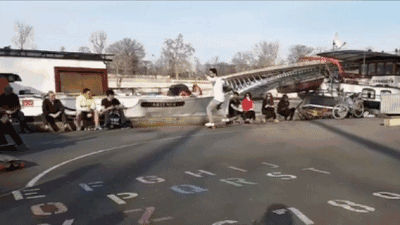

黎建鹏是清远市技师学院的一名学生，他介绍称，是从2017年开始接触长板，每天大概滑4个小时，经常去全国参加各类比赛，目前已拿了17个冠军。
2019年起，黎建鹏陆续参加了多个省市级设计大赛……2020年SYCLD线上男子赞助组冠军。
被网友称赞为「长板女神」的韩国 Dancing 滑手。在长板上可以通过并不复杂的脚法做出非常轻盈、优美的动作，再加上阳光的笑容和修长的双腿而备受关注。她的长板视频对 Dancing 的推广起到了至关重要的作用，其个人风格影响了很大一部分女性长板玩家。
2000 年出生的比利时天才滑板少年。因其精妙的脚法、细长的双腿、超强的 Freestyle 能力、高质量的视频和清秀的容颜，在 Youtube 上广受欢迎。Hans 拍摄了不少长板教学视频，是很好的学习材料。
 知名长板品牌 Loaded 的大使，长板能力非常出众。第一届 SYCLD 比赛冠军，长板界集会「Dock Session」创办人。Dock Session 后发展成全球的组织，各地的长板选手都会举行当地的 Dock Session 进行长板交流和练习。
对manual的控制力更是可怕到惊人。
